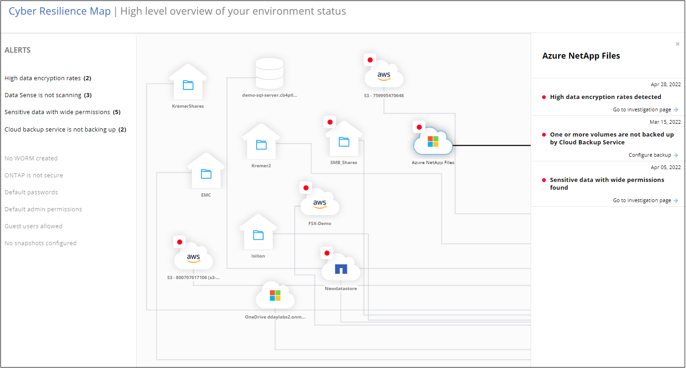

要求變更文件
要求變更文件 編輯此頁面
編輯此頁面 瞭解如何作出貢獻
瞭解如何作出貢獻管理資料來源的網路安全建議
使用勒索軟體保護儀表板檢視所有工作環境和資料來源的網路恢復能力總覽。您可以深入瞭解每個區域、以瞭解更多詳細資料和可能的修正。

網路恢復地圖
網路還原地圖是儀表板的主要區域。它可讓您以視覺化的方式查看所有工作環境和資料來源、並能檢視相關的網路恢復能力資訊。

地圖由三個部分組成：
- 左側面板
-
顯示服務正在監控所有資料來源的警示清單。也會指出您環境中每個作用中警示的數目。有大量一種警示類型、可能是嘗試先解決這些警示的好理由。
- 中央面板
-
以圖形格式顯示所有資料來源、服務和Active Directory。健全的環境具有綠色指標、而具有警示的環境則有紅色指標。
- 右側面板
-
按一下具有紅色指標的資料來源之後、此面板會顯示該資料來源的警示、並提供解決警示的建議。警示會排序、以便先列出最新的警示。許多建議都會引導您選擇另一項Cloud Manager服務、以便解決此問題。
這些是目前追蹤的警示和建議的修正。
| 警示 | 說明 | 補救 |
|---|---|---|
偵測到高資料加密率 |
資料來源中加密檔案或毀損檔案的百分比發生異常增加。這表示在過去7天內、加密檔案的百分比增加超過20%。例如、如果50%的檔案已加密、則一天之後此數字會增加至60%、您會看到此警示。 |
按一下連結以啟動 "資料感應調查頁面"。您可以在其中選取特定_Working Environment_和_Category（加密和毀損）_的篩選器、以檢視所有加密和毀損檔案的清單。 |
找到具有廣泛權限的敏感資料 |
敏感資料位於檔案中、而資料來源的存取權限等級太高。 |
按一下連結以啟動 "資料感應調查頁面"。您可以在其中選取特定_Working Environment_、_Sensitivity Level（敏感個人）_和_Open權限_的篩選條件、以檢視發生此問題的檔案清單。 |
一或多個磁碟區未使用Cloud Backup備份 |
工作環境中的部分磁碟區未受到使用保護 "雲端備份"。 |
按一下連結以啟動Cloud Backup、然後您可以識別工作環境中未備份的磁碟區、然後決定是否要在這些磁碟區上啟用備份。 |
Data Sense不會掃描資料來源中的一或多個儲存庫（磁碟區、儲存區等） |
您的資料來源中有些資料並未使用進行掃描 "雲端資料感測" 找出法規遵循與隱私權方面的考量、並找出最佳化商機。 |
按一下連結以啟動「Data Sense（資料感測）」、並針對未掃描的項目啟用掃描與對應功能。 |
內建的勒索軟體並非適用於所有磁碟區 |
內部ONTAP 的某些Volume無法使用 "NetApp反勒索軟體功能" 已啟用。 |
按一下連結、即可將您重新導向至 強化ONTAP 您的「需求環境」面板 以及問題所在的工作環境。您可以在這裡調查解決問題的最佳方式。 |
不更新版本ONTAP |
安裝在叢集上的版本不符合所提供的建議ONTAP "《NetApp ONTAP 資訊系統安全強化指南》"。 |
按一下連結、即可將您重新導向至 強化ONTAP 您的「需求環境」面板 以及問題所在的工作環境。您可以在這裡調查解決問題的最佳方式。 |
未針對所有磁碟區設定快照 |
工作環境中的部分磁碟區無法透過建立磁碟區快照來保護。 |
按一下連結、即可將您重新導向至 強化ONTAP 您的「需求環境」面板 以及問題所在的工作環境。您可以在這裡調查解決問題的最佳方式。 |
依資料敏感度排名第一的資料儲存庫
「_依敏感度等級_排名前四的資料儲存庫」面板最多會列出包含最敏感項目的前四個資料儲存庫（工作環境和資料來源）。每個工作環境的長條圖分為：
-
非敏感資料
-
個人資料
-
敏感的個人資料

您可以將游標停留在每個區段上、查看每個類別中的項目總數。
按一下每個區域、即可在「Data Sense Investigation」（資料感測調查）頁面中檢視篩選後的結果、以便進一步調查。
網域管理員群組控制項
「網域管理員群組」控制面板會顯示最近新增至網域系統管理員群組的使用者、以便您查看這些群組中是否允許所有使用者。您必須擁有 "整合全域Active Directory" 此面板可在Cloud Data感應中使用。

預設的管理管理群組包括「系統管理員」、「網域管理員」、「企業系統管理員」、「企業金鑰管理員」及「金鑰管理員」。
依開啟權限類型列出的資料
「開啟權限」面板會顯示所有要掃描檔案的每種權限類型百分比。此圖表是以Data Sense提供、並顯示下列權限類型：
-
無開放存取權
-
開放給組織使用
-
開放給大眾使用
-
不明存取

您可以將游標停在每個區段上、查看每個類別中的檔案百分比和總數。
按一下每個區域、即可在「Data Sense Investigation」（資料感測調查）頁面中檢視篩選後的結果、以便進一步調查。
以加密檔案列出的資料
「加密檔案」面板會顯示前4大資料來源、其檔案經過一段時間加密的百分比最高。這些項目通常是受密碼保護的項目。它會比較過去7天的加密速率、以查看哪些資料來源的資料增加率超過20%。增加此金額可能表示勒索軟體已經攻擊您的系統。

按一下其中一個資料來源的一行、即可在「Data Sense Investigation」（資料感測調查）頁面中檢視篩選後的結果、以便進一步調查。
鞏固不均系統的狀態ONTAP
「_Harden Your ONTAP SUREYSURITY」面板提供ONTAP 您的某些支援系統設定的狀態、可追蹤您的部署安全程度、並根據 "《NetApp ONTAP 資訊系統安全強化指南》" 以及 "介紹防勒索軟體功能ONTAP" 主動偵測異常活動並提出警告。
您可以檢閱建議、然後決定如何解決潛在問題。您可以依照步驟變更叢集上的設定、將變更延後至其他時間、或忽略建議。
此面板ONTAP 目前支援Cloud Volumes ONTAP 內部的NetApp ONTAP 支援功能、包括內部的功能、功能、功能、以及Amazon FSX for NetApp等系統。

正在追蹤的設定包括：
| 強化目標 | 說明 | 補救 |
|---|---|---|
不勒索軟體ONTAP |
啟動內建勒索軟體的磁碟區百分比。僅對內部ONTAP 的供應系統有效。綠色狀態圖示表示已啟用超過85%的磁碟區。黃色表示啟用40-85%。紅色表示啟用< 40%。 |
"瞭解如何在磁碟區上啟用反勒索軟體" 使用System Manager。 |
版本ONTAP |
叢集上安裝的更新版本。ONTAP綠色狀態圖示表示版本為最新版本。黃色圖示表示叢集落後1或2個內部部署系統的修補版本或1個次要版本、Cloud Volumes ONTAP 或落後1個主要版本的更新版本。紅色圖示表示叢集落後3個修補程式版本、2個次要版本、或1個主要版本的內部部署系統、或2個主要Cloud Volumes ONTAP 版本的內部更新。 |
|
快照 |
是在資料磁碟區上啟動的快照功能、以及有多少百分比的磁碟區有Snapshot複本。綠色狀態圖示表示超過85%的磁碟區已啟用快照。黃色表示啟用40-85%。紅色表示啟用< 40%。 |
"瞭解如何在內部叢集上啟用Volume快照"或 "在您的系統上Cloud Volumes ONTAP"或 "在FSXfor ONTAP Sfor Sf系 上"。 |
關鍵業務資料的權限狀態
「業務關鍵資料權限分析」面板會顯示資料的權限狀態、這對您的業務而言至關重要。如此一來、您就能快速評估保護業務關鍵資料的能力。

此面板一開始會根據我們所選的預設原則顯示資料。但您可以選取您所建立的2項最重要的Data Sense _Policies（資料感測政策）、以檢視最重要的業務資料。瞭解如何操作 "使用Data Sense建立原則"。
此圖表顯示符合原則條件的所有資料之權限分析。它會列出下列項目數量：
-
開放給大眾使用：Data Sense認為公開的項目
-
開放給組織權限：Data Sense認為對組織開放的項目
-
無開放式權限：Data有意義的項目、將其視為無開放式權限
-
未知權限：Data有意義視為未知權限的項目
將游標移到圖表中的每個長條上、即可檢視每個類別中的結果數目。按一下長條圖、就會顯示「Data Sense Investigation」（資料感測調查）頁面、以便進一步調查哪些項目具有開啟權限、以及您是否應該調整檔案權限。
關鍵業務資料的備份狀態
「備份狀態」面板會顯示使用Cloud Backup保護不同類別的資料的方式。這可辨識出備份最重要的資料類別、以因勒索軟體攻擊而需要恢復時、最重要的資料類別有多全面。此資料是工作環境中特定類別項目的備份數量的視覺化表示。
此面板僅ONTAP 會顯示已Cloud Volumes ONTAP 使用Cloud Backup _and _掃描的內部環境、以及使用Cloud Data Sense進行備份的內部環境。

此面板一開始會根據我們所選的預設類別顯示資料。但您可以選取要追蹤的資料類別、例如程式碼檔案、合約等。請參閱完整清單 "類別" 適用於您的工作環境、可從Cloud Data Sense取得。然後選取最多4個類別。
填入資料後、將游標移到圖表中的每個方塊上、即可檢視工作環境中所有檔案中備份的檔案數量。綠色方塊表示85%以上的檔案正在備份中。黃色方塊表示40%到85%的檔案正在備份中。紅色方塊表示有40%或更少的檔案正在備份。
您可以按一下列末端的「Cloud Backup（雲端備份）」按鈕、前往Cloud Backup介面、以便在每個工作環境中的更多磁碟區上進行備份。